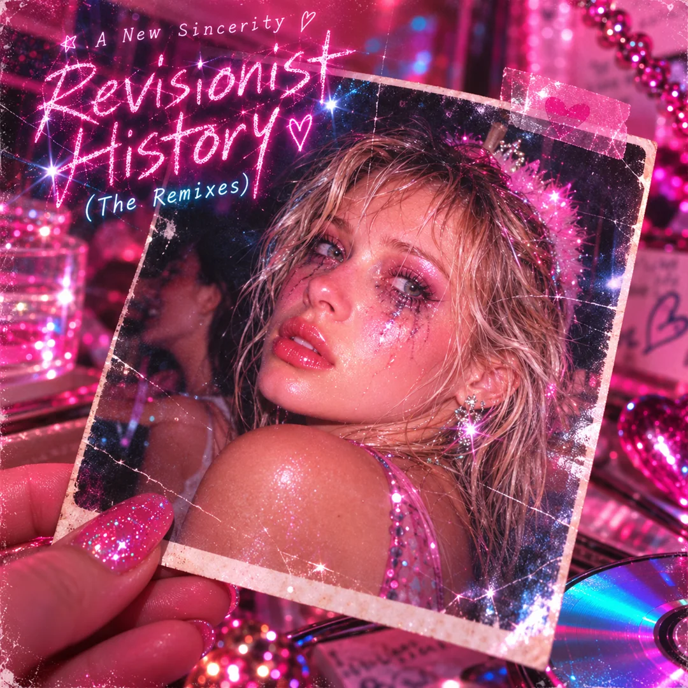

The old recordings are real.
The singer on the remakes is generated. I kept the words and parts, then used A New Sincerity to continue the career I did not have.
open revisionist historya writing project that keeps becoming music
this is getting a bit disorienting... I made a counterfactual me who stayed an emo/posthardcore musician, then had him remix my (real! actually recorded) old songs
starting with the first album?
Revisionist History collects songs I wrote for Lock Haven and The System of the World, now recorded by A New Sincerity.

our favorite on the record
The remake brings the high guitar harmonies forward and gives the chorus room to open.
The remixes led to new songs. On the first A New Sincerity album, every narrator can explain his own manipulation while he is still doing it.
The jokes work because the feelings under them are real. The choruses are much too large to count as an apology.

Self-awareness never becomes self-control.
open the albumstart with one of these
save this one for later“I Forgive Myself (On Your Behalf)” is the funniest song on the album.
then my daughters complained that my love songs aren't real love songs because they are sad, which - fair. so I made a fake girl pop band that was like my permission structure to make uncomplicated love songs, then alternate-reality-me remixed that too
Friday Girls recorded the uncomplicated love songs. Then A New Sincerity remixed “Since When?!” too.
anyway that's what this is about
friday girls · this whole time?!
the song at the center of this site
The emulated Stereogum review called this the potential emotional center of the album. I sampled that sentence, answered it, and made the answer into the next song.
“And every time he gets unnerved, he converts the experience into an artistic achievement, thereby making the thing unnerving him even more successful.”
“Well, fuck. That's pretty good.”
pull one note from the sleeve
One note at a time. The song keeps playing.
The singer on the remakes is generated. I kept the words and parts, then used A New Sincerity to continue the career I did not have.
open revisionist historyI wrote the songs with AI, chose the performances, and produced the album. My family listens to the finished songs.
There is a small crush on the fictional band, plus some envy of how easily they sing happy songs. That attachment partly explains why I kept replaying the album.
I asked AI to review the album, sampled a sentence from the review in the next track, and built this page around that track.
current status
yes I know it is ai psychosis. just trying it out for a bit.
Their mistake, we suspect, was not going far enough. We therefore propose to use artificial intelligence to invent people, fabricate their memories, fall in love with them, and turn our mounting psychological concern into an increasingly successful artistic enterprise.
other people mistake self-awareness for immunity to self-deception
fortunately, I'm too self-aware to do that
rip to those guys but
I'm built different (dumber)
or skip the explanation
Start a record and it plays straight through. Open any song for synced lyrics.
open the recordsinner sleeve / timed lyrics
choose a song
press play to start with victory lap